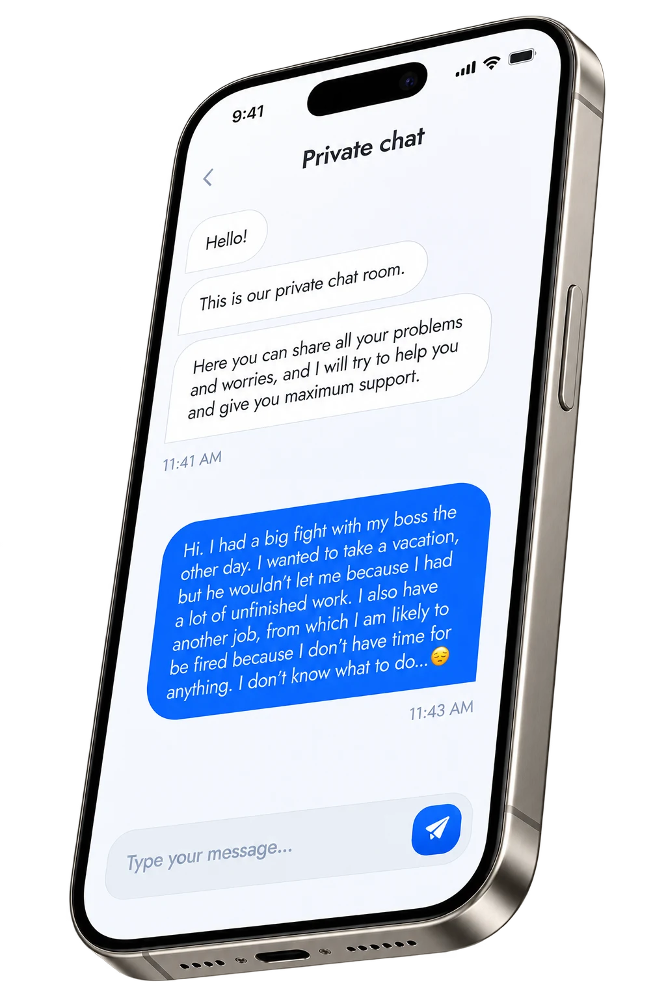
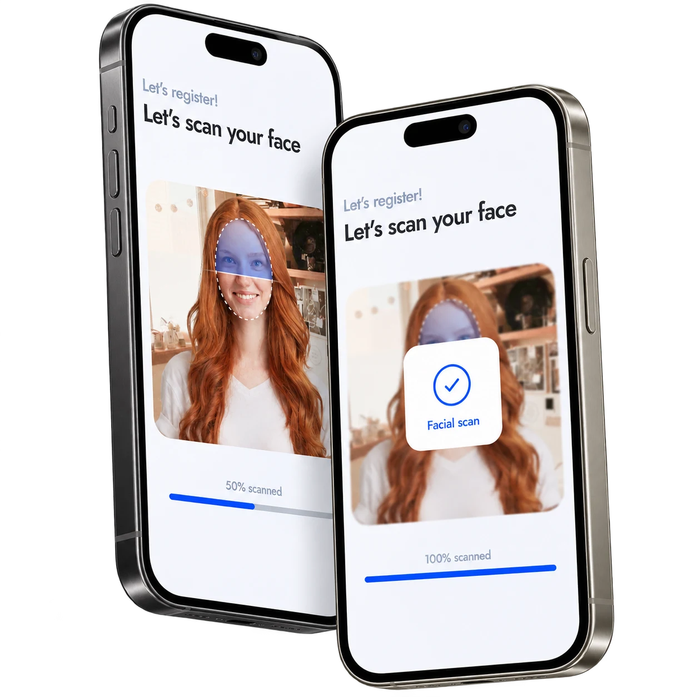
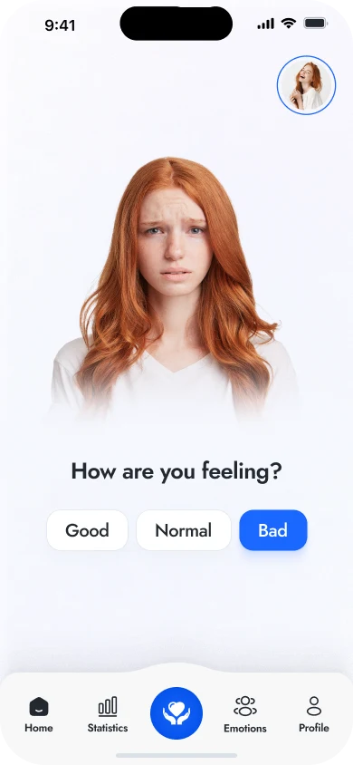
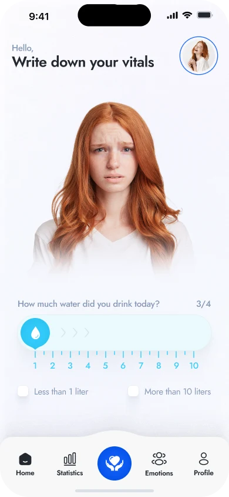
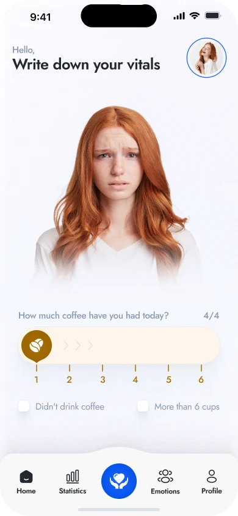
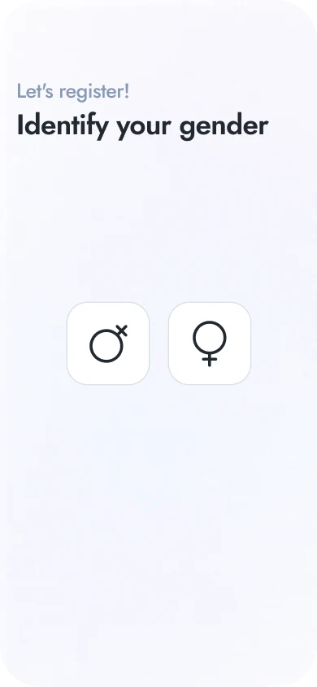
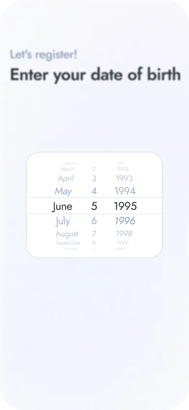
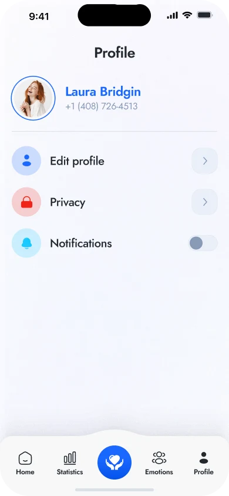

Private chat
Let it out.
A dedicated space for worries, thoughts, and moments that are difficult to say aloud.

A conceptual emotional health app that reflects your inner state through a living 3D self
In the rush of everyday life, we lose connection with our emotions.
How are you? helps you gently reconnect with yourself and visualize your mental state.

A name, a feeling, and a few everyday habits. The introduction moves from an open question to simple scales, giving the experience a personal starting point.
Sleep and meals. Water and coffee.
A few simple scales establish your routine.

The proposed face scan introduces a personal 3D double. Its expression is intended to reflect daily check-ins, making an abstract feeling easier to see.

Personalisation through a familiar face — a visual concept for the future experience.
Good, normal, or bad. A short question creates room to recognise how the day feels before moving on to everyday habits.
The digital double is designed to change expression with the recorded state. The home screen brings that reflection and daily habits into one view.


Sleep, meals, water, and coffee. Four colour-coded scales make the daily routine quick to record and easy to recognise.




Two spaces for two different needs: a private conversation to put feelings into words, and a shared feed of everyday experiences.
A dedicated space for worries, thoughts, and moments that are difficult to say aloud.

Short personal posts bring everyday changes and experiences into a shared conversation.

Personal details, a date picker, phone entry, and code verification form the registration flow. Each step keeps one decision in focus.



Profile editing, notification settings, sharing preferences, and account controls complete the experience.



A vivid blue anchors the interface. Four distinct accent colours connect daily habits to their scales and summary cards. Rounded surfaces and soft shadows keep the experience approachable.
Expressive headings. Clear everyday labels.